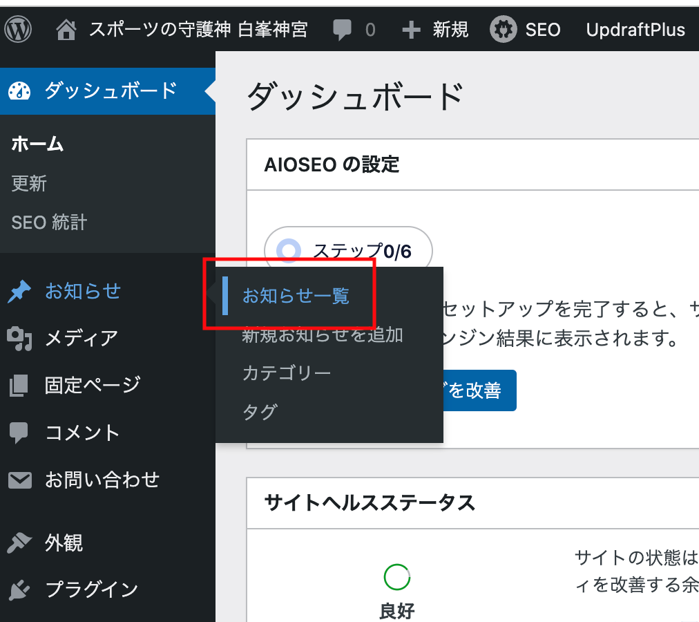
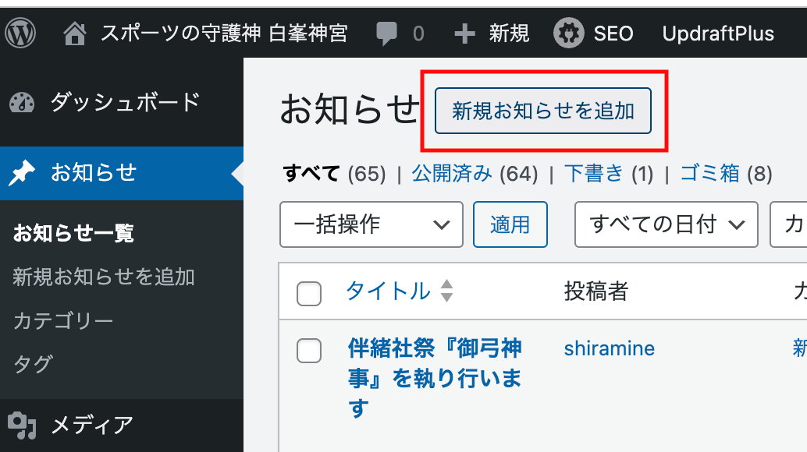
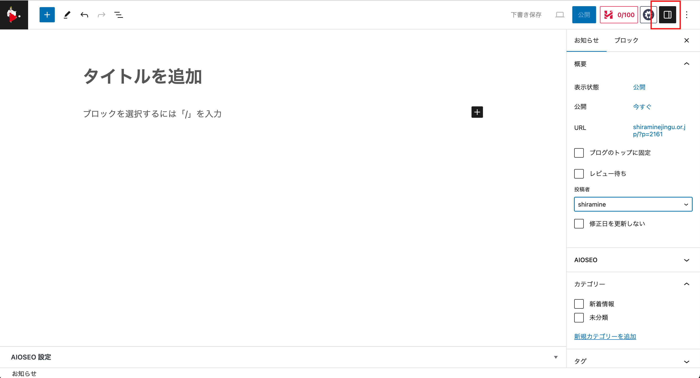

WPの投稿
設定
WPダッシュボードへのログイン
投稿するために以下の情報を参考にWordPressのダッシュボードへログインします。
- URL
- https://shiraminejingu.or.jp/login_89105
- ニックネーム
- shiramine
- Mail Address
- asukai@shiraminejingu.or.jp
- Pass Word
- e58c97e69d91
投稿ページへ移動
ダッシュボードのメニュー「お知らせ / お知らせ一覧」で投稿のページへ移動します。
投稿する
赤囲みのボタンを押すと新規投稿画面が開きます。
 赤囲みのボタンを押して右のメニューを出し以下を確認してください。
- 投稿者を
shiramineにする。 - カテゴリーは
新着情報にチェックをいれる。

記事を書く
赤枠の黒いプラスアイコンをクリックするとメニューが現れます。
下のすべて表示をクリックして画面左側にツールメニューを表示させてください。

メニュー内にカーソルを持っていき入力するテキストの属性を選択することができます。

テキスト入力後にテキストを選択すると上にメニューが現れます。 太字、斜体、リンク埋め込み、打ち消し線など属性を追加できます。

画像を入れる
編集している行に左メニューから画像を選択します。

編集している行にダイアログが現れます。
アップロードからローカルのPC上にある画像を選択して挿入することができます。

ファイルを入れる
編集行にカーソルを入れて『黒いプラス』から『ファイル』を選択する。

メディアライブラリを選択する。

リンクさせたいファイルを選択して、右サイドメニューにある『ファイルのURL』をコピーして編集画面に戻る。

編集画面でリンクさせたいテキストを入力する。メニューからリンクを選択しペーストする。オプションで『新しいタブで開く』をオンにする。


ファイルにリンクしたテキストの完成。

スペースを開けたいとき
段落、リスト、画像などが連続する文章でそれぞれの間隔を調整したいときにスペーサーを使います。
赤枠のように、段落と画像の間のスペースを調整したいときに、段落の最後を改行して入力可能な状態にします。
黒い四角のプラスマークから左メニューを呼び出します。

左メニューのスペーサーをクリックすると、編集画面の該当段落にグレーの領域ができますので、中央下のハンドルで領域を調整してください。